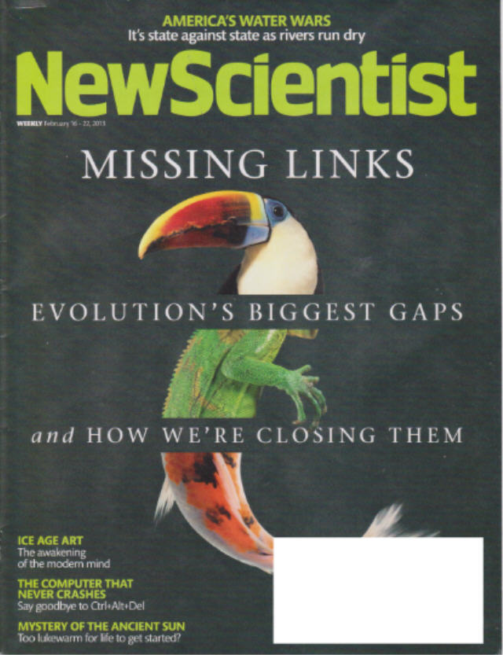
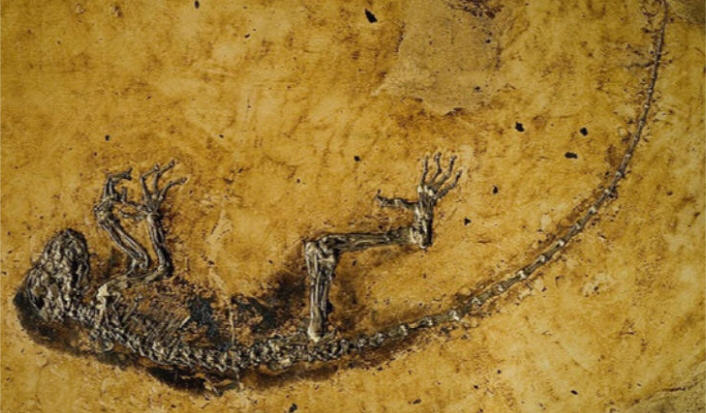

| Feature Article - March 2013 |
| by Do-While Jones |
Evolution's biggest gaps aren't being filled, no matter what the cover of New Scientist says.
The cover of the February 16, 2013, issue of New Scientist proudly proclaimed, "MISSING LINKS--Evolution's Biggest Gaps and How We're Closing Them."
 |
|---|
That's a slightly misleading summary of what the article actually says. The article does document a few of the many missing links, and grudgingly admits that they are still missing. The phrase, "How We're Closing Them" implies that real progress is being made; but the article unwittingly reveals what is really going on.
Scientists imagine what a missing link might look like, and then try to find fossils that can be made to appear to fit the pre-conceived notion. Objectivity is thrown to the wind in order to reinforce their evolutionary prejudice. In their words,
|
Today's missing-link hunters are increasingly taking such a tack, making predictions and then using a variety of advanced tools, ranging from gene sequencing to modern imaging techniques, to find the fossil evidence. 1 |
Tiktaalik is a good example.
Tiktaalik is supposed to be a transitional fossil showing how fish evolved into amphibians.
|
For [Ted] Daeschler, who is based at the Academy of Natural Sciences in Philadelphia, Pennsylvania, the big question was: how did terrestrial animals evolve from fish? The key step, so we think, was when the lobe-shaped fins of some bony fish evolved into limbs around 375 million years ago. But there was no fossil evidence for this. So Daeschler teamed up with Neil Shubin from the University of Chicago and together they scoured geological maps in search of surface rocks of the correct age. Their spotlight fell on Ellesmere Island in the high Canadian Arctic and, in the fourth summer of digging, they finally uncovered their quarry: a fish with four limbs. They called it Tiktaalik. 2 |
We told you all about Tiktaalik just one month after the discovery was published. 3 Please go back and reread that article. In that extensive essay we pointed out many reasons why Tiktaalik isn't a missing link. There is no biological proof of ancestry. It just looks like what they imagined a transitional form should look like, and they jumped to the desired conclusion based on their prejudice. New Scientist admits this when they quote Daeschler.
|
"Tiktaalik," he says, "was a great example of a prediction that you could make and go out and validate" - by discovering the right fossil. 4 |
The claim that Tiktaalik was the missing link was reported in May of 2006. Just one month later, Discover magazine said Panderichthys was the transitional form between fish and mammals, based on the ridiculous notion that it breathed through its ears! (No kidding!) We dutifully reported that to you. 5 We hope you will go back and reread that essay, so we don't have to repeat it all again.
Even if Tiktaalik were a missing link, it is irrelevant because its supposed descendant died out, making it a dead end.
|
Tiktaalik and its kin were the first fish with limbs strong enough to walk on the shore, but they were not proper residents. True amphibians evolved tens of millions of years later. Exactly how and when is hidden by a break in the fossil record called Romer's gap, named after the palaeontologist who first noticed it, Alfred Romer. Why fossil evidence from this period, from 360 to 345 million years ago, is so sparse is still debated, but we know that it followed a mass extinction at the end of the Devonian, the Hangenberg event, that wiped out many primitive fishes. Lobe-finned fish and the paddle-limbed descendant of Tiktaalik, Acanthostega, vanished. 6 |
If Acanthostega vanished, leaving no descendents, some fish other than Tiktaalik had to have evolved into the first amphibian. That link is still missing.
Last month we told you about the report from the 2013 Comparative Biology meeting highlighting the problem that any fish would have had trying to eat on land. 7 Evolutionists have been chewing on this problem for some time.
|
"One of the biggest unsolved mysteries in evolution is the gap between jawless and jawed vertebrates," says John Long of the Natural History Museum of Los Angeles County. The evolution of jaws was vital to the success of species from sharks and Tyrannosaurus rex to humans. "It required a rearrangement of the whole cranial anatomy," Long says. Now we know when and where that anatomical rearrangement got started. In 2011, Zhikun Gai at the Institute for Vertebrate Paleontology and Paleoanthropology in Beijing, China, announced that he had found a crucial intermediate form (Nature, vol 476, p 324). He made the discovery using synchrotron X-ray microscopy, which gives 3D images at submicrometre resolution without damaging samples. The specimen Gai scanned, that of a jawless fish called a galeaspid, had already been studied under optical microscopes, but the X-rays revealed something new hidden within the rock. Rather than the single nostril found in other jawless fish, Gai found a pair of nostrils, one on each side of the skull. In more advanced fish, the space between paired nostrils allows the embryonic cells that form jaws to migrate to the correct position. So although galeaspids remained jawless, by evolving paired nostrils they removed a barrier to jaw development. Gai now plans to work forward from jawless fish to look for other signs of emerging jaws. 8 |
Here's the objectivity test: If one did not have an evolutionary prejudice, would one naturally come to the conclusion that a particular jawless fish must have evolved into a fish with a jaw because it had two nostrils instead of one?
 |
|---|
Remember, this is supposed to be an article about how missing links are being found, closing the gaps in our knowledge of how evolution produced all the intermediate life forms leading up to man. With this in mind, we have to wonder, why did they bring up Ida?
|
In 2009, Darwinius, a 47-million-year-old fossil, was found in the Messel pit site near Darmstadt, Germany. Nicknamed Ida, it made a big splash as a possible missing link in the lineage leading to humans. We now know it was on a side branch that went extinct, but Darwinius nonetheless gives important insight into the anatomy of early primates. 9 |
Actually, it was never important from an evolutionary perspective. It wasn't a side branch that went extinct. It was just remarkably complete.
Immediately after the announcement of the discovery of Darwinius, articles in Nature, Science and even New Scientist dismissed it as irrelevant! 10 So why does New Scientist include it in an article about how new discoveries are filling the gaps in the evolutionary record? Simply because they don't have any real missing links to report.
Some people think that anything a computer says must be true. I took advantage of that belief in 1965 when I wrote a program that took data from all the girls and boys in my high school class and computed the most compatible couples. Remarkably, the program I wrote said that all the cheerleaders were more compatible with me than any other boy in school! Computers don't lie! (But programmers can influence their conclusions.)
I've noticed an increasing number of instances in the technical literature where computers draw evolutionary conclusions that seem to contradict common sense or conventional wisdom. For example,
|
.... But until very recently, the oldest known dinosaur fossil was just 230 million years old. Last year, a specimen some 10 to 15 million years older than that turned up. Nyasasaurus came as a surprise, not least because it had been sitting in the collection of the Natural History Museum in London for decades. Both it and Ctenosauriscus were identified as missing links thanks to a growing database of early archosaur specimens. With software to compare physical traits across many species, we can make connections not immediately obvious from skeletons. For example, Ctenosauriscus has a sail on its back, but computer analysis revealed many less obvious features that put it among the crocodilians. Nyasasaurus was spotted as a potential missing link by Sterling Nesbitt of the Field Museum of Natural History in Chicago, who does fieldwork at the Manda beds in Tanzania where it was unearthed. Sure enough, his computer-aided analysis revealed it to be an early dinosaur or close relative (Biology Letters, vol 9, p 20120949). 11 |
Gee, imagine that!
No article about transitional fossils would be complete without mentioning Archaeopteryx.
|
Archaeopteryx remains the iconic transitional fossil, a small predatory dinosaur caught in the act of evolving into a bird about 150 million years ago. ... Despite its fame, Archaeopteryx is rather late in the day as far as the shift from reptiles to birds is concerned. Researchers would really like to find transitional specimens that predate it, and were excited by the discovery a few years ago of older fossil beds beneath Jehol. Unfortunately the Daohugou formation has not lived up to expectations so far. 12 |
Archaeopteryx is not a transitional fossil. It is a bird. That's why they are still looking for the missing link that ties dinosaurs and birds together. They have not found it yet.
The New Scientist article is long and contains more, similar examples that just go to show that no real missing links have been found. So, let me just pick up my guitar and hope you are old enough to remember Paul Revere and the Raiders' hit song, "Kicks," as you turn the page to see how it evolved into "Links."
| Quick links to | |
|---|---|
| Science Against Evolution Home Page |
Back issues of Disclosure (our newsletter) |
| Web Site of the Month |
Topical Index |
Footnotes:
1
Hecht, New Scientist, 16 February 2013, "Evolution's detectives: Closing in on missing links", pp 34-38, http://www.newscientist.com/article/mg21729041.900-evolutions-detectives-closing-in-on-missing-links.html?
2
ibid.
3
Disclosure, May 2006, "A Fishy Ancestor"
4
Hecht, New Scientist, 16 February 2013, "Evolution's detectives: Closing in on missing links", pp 34-38, http://www.newscientist.com/article/mg21729041.900-evolutions-detectives-closing-in-on-missing-links.html?
5
Disclosure, June 2006, "Holes in Their Heads"
6
Hecht, New Scientist, 16 February 2013, "Evolution's detectives: Closing in on missing links", pp 34-38, http://www.newscientist.com/article/mg21729041.900-evolutions-detectives-closing-in-on-missing-links.html?
7
Disclosure, February 2013, "2013 Comparative Biology Meeting"
8
Hecht, New Scientist, 16 February 2013, "Evolution's detectives: Closing in on missing links", pp 34-38, http://www.newscientist.com/article/mg21729041.900-evolutions-detectives-closing-in-on-missing-links.html?
9
ibid.
10
Disclosure, June 2009, "Ida, The Missing Link"
11
Hecht, New Scientist, 16 February 2013, "Evolution's detectives: Closing in on missing links", pp 34-38, http://www.newscientist.com/article/mg21729041.900-evolutions-detectives-closing-in-on-missing-links.html?
12
ibid.